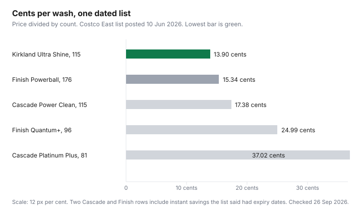

Household Items and Supplies · Canada
Dishwasher Pods vs Powder vs Gel in Canada: Cost per Wash and What Actually Cleans
A premium pod can cost more than double a warehouse pac on the same shelf, and the dishes can look the same. The useful number is cents per wash: price divided by the count on the box. Brand stories about "what actually cleans" need a test this draft did not open. What this page can show is the price gap, two cities' hardness numbers, and Finish Canada's own instruction not to pre-rinse.
Laundry pods are the same division on the cost-per-load guide. Store-brand switches that did verify are on the household store-brand page. Whether the Kirkland row belongs in a membership trip is the Costco household aisle.
Key takeaways
- Costco East, posted 10 Jun 2026: Kirkland Ultra Shine, 115 pacs, $15.99, is 13.90 cents a wash. Cascade Platinum Plus, 81, $29.99, is 37.02 cents.
- Finish Powerball, 176 at $26.99 after a $7 instant saving the list said expired 21 Jun 2026, is 15.34 cents. Finish Quantum+, 96 at $23.99, is 24.99 cents.
- No Name, Great Value, powder, and gel prices did not load. They are omitted on purpose.
- Toronto's 2024 drinking-water analysis averaged hardness at 121 mg/L as calcium carbonate. Calgary's 2025 ranges run from 141 to 274 mg/L depending on plant and season.
- Finish Canada says scrape, do not pre-rinse, and quotes up to 75 litres a load as its own figure.
Cost per wash: premium pods vs Kirkland vs store-brand powder (CAD table)
Every row below is price divided by the count printed on the Costco East cleaning list posted 10 Jun 2026, for Ontario and Atlantic warehouses, flyer window 8 Jun to 5 Jul 2026. Kirkland Signature Ultra Shine dish pacs, 115 count, $15.99, is $15.99 divided by 115, which is 13.90 cents. Cascade Power Clean, 115, $19.99, includes a $5.00 instant saving the list said expired 21 Jun 2026, and is 17.38 cents. Finish Powerball, 176, $26.99, includes a $7.00 instant saving with the same expiry, and is 15.34 cents. Finish Quantum+, 96, $23.99, is 24.99 cents. Cascade Platinum Plus, 81, $29.99, is 37.02 cents. After those expiry dates, re-read the tag. Do not keep using the sale cents.
Store-brand powder, a gel, No Name, and Great Value were not on that list, and a Walmart or No Frills product page with a single powder price and a dose count did not load on 26 Sep 2026. Leaving them out is the point. A forum claim that powder is "half the price" is not a Canadian shelf tag. If you hold a box of powder, divide the price by the number of tablespoons the label says you will get, not by a scoop you invented.
| Product | Count | Price | Cents per wash | Note on the list |
|---|---|---|---|---|
| Kirkland Signature Ultra Shine dish pacs | 115 | $15.99 | 13.90 | No instant saving printed on this line |
| Finish Powerball | 176 | $26.99 | 15.34 | $7.00 instant saving the list said expired 21 Jun 2026 |
| Cascade Power Clean | 115 | $19.99 | 17.38 | $5.00 instant saving the list said expired 21 Jun 2026 |
| Finish Quantum+ | 96 | $23.99 | 24.99 | No instant saving printed on this line |
| Cascade Platinum Plus | 81 | $29.99 | 37.02 | No instant saving printed on this line |
| Finish Jet-Dry rinse agent | 1.12 L | $15.99 | Not calculated | No doses per bottle on the list |

Hard water in Canada: why rinse aid and dosage matter more than brand
Hardness is calcium and magnesium, and it varies by city and by season. It is not a slogan about "the Prairies" or "Ontario." Toronto Water's Drinking Water Analysis Summary for 2024 lists hardness as calcium carbonate, calculated, with a minimum of 116 mg/L, a maximum of 131 mg/L, and an average of 121 mg/L, for samples from 1 Jan to 31 Dec. The same row prints 80–100 in the guideline column beside that average. Calgary's water-quality page, ranges marked for 2025, lists Bearspaw from 151–200 mg/L in January to March, 141–192 in April to June, 151–177 in July to September, and 168–197 in October to December. Glenmore is higher: 208–274, 181–245, 191–216, and 213–248 across those same seasons. The page's summary line for hardness as calcium carbonate is 141–274 mg/L, and the limit column says no limit.
That spread is why a pod that looks identical in two kitchens can leave spots in one of them. Rinse aid is the product aimed at spots. Finish Jet-Dry on the Costco list is $15.99 for 1.12 L. Until the label tells you the millilitres per cycle, you cannot turn that bottle into cents per wash. Dosage matters for the same reason: a pod is one dose, which is convenient and also the reason you cannot use half. Powder lets you cut the scoop. This draft did not open a lab comparison of brands in hard water, so it does not declare a winner at 200 mg/L. It tells you to read your plant's number, then decide whether the 37-cent pod is buying chemistry you can see.
Pre-rinsing wastes water and money—what Canadian manufacturers actually recommend
Finish's Canadian page for skip-the-rinse says modern detergents are meant to be used without a pre-rinse. The instruction is to scrape larger pieces into the rubbish bin and load the machine. The same page says Finish Quantum Ultimate is designed so you can skip the rinse and save up to 75 litres of water per load. A second line on that page says pre-rinsing Canadians are wasting up to 40 billion litres a year, and it cites Finish equity testing from July 2019 for a 72 percent pre-rinse rate. Those are the manufacturer's figures. Use them as Finish's claim, not as a meter on your faucet.
The money is the water and the time, plus a second wash when film makes you run the machine again. A full load is the other half of the same advice. Half a machine at 13.90 cents is still 13.90 cents, and it used a cycle. Hand-washing math is not on this page. The point is narrower: do not pay for a pod and then rinse the plate until the pod has nothing to do.
Stock-up timing: when Shoppers, Walmart, and Costco put dish detergent on deep sale
One dated window loaded. The Costco East list was posted 10 Jun 2026 inside a flyer of 8 Jun to 5 Jul 2026. The Cascade Power Clean and Finish Powerball lines carried instant savings the list said expired 21 Jun 2026. Kirkland at $15.99 and Cascade Platinum Plus at $29.99 did not show an instant saving on those lines. That is a stock-up moment only if the cents per wash beat the number already in your price book. A sale that expires and leaves you with 81 premium pacs you will not finish is not a saving.
Shoppers Drug Mart bonus events and a Walmart deep-cut week were not on a page opened on 26 Sep 2026. This guide will not invent a "pods go on sale in September" rule. When you see a flyer, write the price and the count, divide, and compare with 13.90 cents from this list, remembering that 13.90 cents was a warehouse price in Ontario and Atlantic Canada in June 2026, not a permanent national price.
Dishwasher maintenance (filter cleaning) that avoids repair calls
A filter full of pasta and pits makes a clean detergent look weak. The usual design is a filter under the bottom rack that you twist out, rinse, and put back. Your model may differ. A Canadian manufacturer's page with a numbered interval, such as "every 30 days," did not load for this draft, so no interval is printed here. Use the manual for the machine you own. If the manual is gone, the brand's support site for that model number is the source, not a guess from another brand.
Cleaning the filter is maintenance. It is not a diagnosis that the pump has failed. If the machine still leaves standing water or will not drain after the filter is clear, the repair-or-replace decision belongs on the repair or replace guide, with the quote in front of you. Do not buy a more expensive pod to compensate for a filter you have not rinsed.
Simple household rule for pod vs powder by load type
Use the cheap counted dose, Kirkland at 13.90 cents on this list, for ordinary plates. Move to a dearer pod only when you can see a difference you care about, such as baked-on starch that survived a normal cycle, and only after the filter is clean and you have stopped pre-rinsing. Powder stays off this page until you have a tag: price divided by labelled scoops. Gel is the same. A half-empty machine is never the expensive pod's job. Wait until the racks are full, scrape, and run it once.
Sources & date stamps
- Costco East cleaning list, posted 10 Jun 2026, opened 26 Sep 2026: Kirkland Ultra Shine dish pacs 115 at $15.99; Cascade Power Clean 115 at $19.99 with a $5 instant saving the list said expired 21 Jun 2026; Finish Powerball 176 at $26.99 with a $7 instant saving the list said expired 21 Jun 2026; Finish Quantum+ 96 at $23.99; Cascade Platinum Plus 81 at $29.99; Finish Jet-Dry 1.12 L at $15.99.
- Finish Canada skip-the-rinse page, opened 26 Sep 2026: scrape rather than pre-rinse; up to 75 litres a load is the page's figure; July 2019 testing is cited on the page for the pre-rinse rate.
- City of Toronto Drinking Water Analysis Summary 2024, opened 26 Sep 2026: hardness as calcium carbonate, average 121 mg/L, range 116–131.
- City of Calgary water hardness page, ranges marked for 2025, opened 26 Sep 2026: Bearspaw and Glenmore seasonal ranges, summary 141–274 mg/L, no health limit in that table.
Frequently asked questions
Are dishwasher pods worth the extra cost?
On the Costco East list posted 10 Jun 2026, Kirkland Ultra Shine pacs were 13.90 cents a wash and Cascade Platinum Plus was 37.02 cents. That gap is real on this list. It is not a lab result about which box cleans better. A pod is worth the gap if you will not measure powder and you otherwise rewash. Powder and gel prices were not on the pages that loaded, so they are not in the comparison.
Do I need rinse aid?
Finish Jet-Dry rinse agent was on the same Costco list at $15.99 for 1.12 L. The list does not say how many washes that bottle covers, so this guide does not invent a cents-per-wash for it. Calgary's 2025 hardness ranges run from 141 to 274 mg/L as calcium carbonate, and Toronto's 2024 analysis averaged 121 mg/L. Hard water is where spotting shows up. Read your city's report, then decide if the rinse-aid bottle earns its price.
Should I pre-rinse dishes?
Finish's Canadian skip-the-rinse page says to scrape large pieces into the bin and not to pre-rinse. The page says Finish Quantum Ultimate is designed so a household can skip the rinse and save up to 75 litres a load. That 75 litres is the manufacturer's figure, not an independent meter reading. Scrape, load, and run a full machine.
How do I clean a dishwasher filter?
Open the bottom rack and take out the filter your manual names, usually a cylinder you twist out. Rinse it under the tap until the food film is gone, then seat it again. A day count was not on a Canadian dishwasher maker's page opened for this draft, so use the interval in your manual. A clogged filter is a cheap fix next to a service call. Repair-or-replace math for the machine itself is a different guide.
When do dish detergents go on sale?
The Costco East list posted 10 Jun 2026 sat in a flyer window of 8 Jun to 5 Jul 2026. Some instant savings on that list expired 21 Jun 2026, including $5 off Cascade Power Clean and $7 off Finish Powerball. A Shoppers Drug Mart or Walmart deep-sale calendar was not opened, so this guide does not name a week for those banners. Re-divide the tag when you see one.